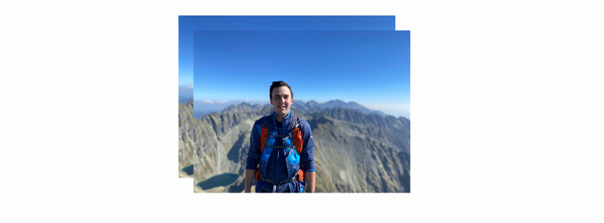

Aktivní
Kryštof Gilich
Infrastructure Engineer • @ Seznam.cz
👋 Posledních 6 let jsem v Seznam.cz pomáhal udržet nejnavštěvovanější české služby v chodu — s mnoha mými kolegy jsem vyvíjel a spravoval cloudovou infrastrukturu a load balancery, které drží obrovský denní traffic.
🚀 Nyní hledám nové příležitosti, rád do své workflow zapojuji AI a stále posouvám své znalosti. Ve volném čase lezu, nebo chodím do lesa se psem.
Tech Stack & Technologie
GoLang
Cloud
Kubernetes
Ansible
Python
Linux
and others